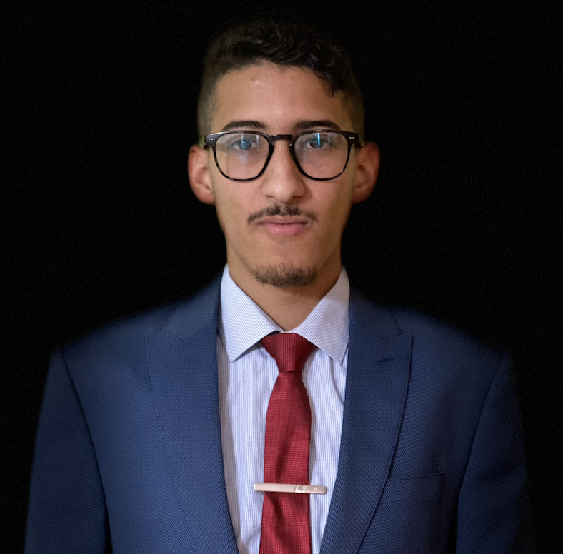

Mon Curriculum Vitae
Information sur mon parcours professionnel et académique.

Formation
Institut Mines Télécom Nord Europe
Ingénieur généraliste - Double Diplôme | 2022 - 2024
- Domaine: Industrie et services
École Nationale Supérieure des Mines Rabat
Cycle d'ingénieur d'état | 2020 - 2022
- Spécialité: génie industriel
Centre préparatoire, Meknès
CPGE Scientifique | 2018 -2020
- Classes préparatoires aux grandes écoles - Mathématiques
Expériences Professionnelles
Amélioration continue outillage à l'usine Saint Gobain Sekurit - Thourotte, France
5 mois, 2023
- Dématérialisation des documents du service outillage, notamment la création de feuilles de marche et de modes opératoires conformes aux normes de l'entreprise.
- Mise en place des KPI pertinents et la création des tableaux de bords pour le suivie.
- Pilotage d'un chantier LEAN management pour l'atelier.
- Formation des opérateurs aux outils du lean et de l'amélioration continue.
- Gestion de projet "la digitalisation des ateliers outillages".
Projet lean manufacturing à Safran - Temara, Maroc
2 mois, 2022
"Amélioration d'un processus Logistique Externe pour un programme d'Airbus A320"
- Modélisation du processus étudié.
- Mesure des indicateurs projet.
- Implémentation des Quick Wins.
- Identification des gaspillages et analyse des causes racines.
- Conception des idées d'amélioration et mise en place de standard, des plans de gestion du changement, et des Audits de suivi et contrôle.
Compétences
Managériales et Techniques:
- Gestion de projets
- Supply Chain
- Management
- ERP
- Amélioration continue
- Lean management
- Management des processus
- Gestion de la qualité
Personnelles:
- Respect de l’éthique de travail
- Esprit d’équipe
- Prise d’initiative
- Leadership
- Organisation
Informatiques:
- Microsoft Office
- MS Project
- VBA
- Power BI